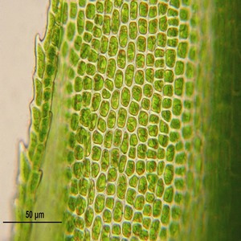

Machine Learning meets wireless communication
- Machine learning-based solutions play an instrumental role since they learn the
optimal strategy iteratively by interacting with the wireless environment
without requiring the knowledge of system parameters. We are exploring
practically implementable machine learning based solutions within the context of
5G/6G wireless technologies.
- Arghyadip Roy
- Ratnajit Bhattacharjee

Machine learning in Biology: Dynamical systems and self-organization
- We are using machine learning tools, dynamical systems theory, and statistical
physics to understand the hidden laws in biology. Currently, we are focused on
three broad topics: a) rules of pattern formation by cells through cell-cell
communication, b) dynamics of cells changing their shape and functions, and c)
dynamics of large molecular networks.
- Biplab Bose
Uncovering audio science and building AI
- We aim to understand the physics associated with sound creation and how the
human brain learns about aspects associated with it. We build signal processing
models to analyze audio signals, machine learning approaches to extract
information from these signals, and human behavioral experiments to collect data
which allows building AI models based on human cognitive understanding.
- Neeraj Kumar Sharma
Signal processing and data analytics for healthcare
- Our goal is to further automated information extraction from body signals
(sound, symptoms, etc.). We aim to design remote, cost-effective, and scalable
disease screening methodologies.
- Debanga Raj Neog
- Neeraj Kumar Sharma

Measurement, modeling, and animation of eye and facial movements
- Creating realistic computer-generated animations of eyes and faces is a very
important problem in computer graphics. We use vision-based systems to capture
data and pursue a data-driven approach for the measurement, modeling, and
animation of the deformation of facial tissues.
- Debanga Raj Neog